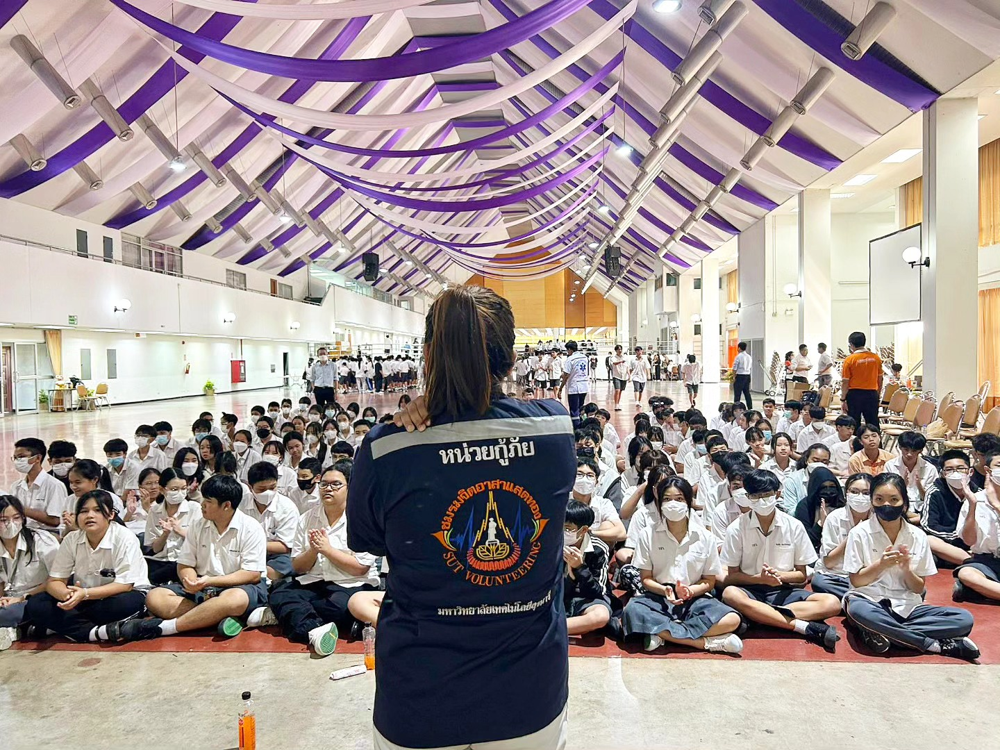
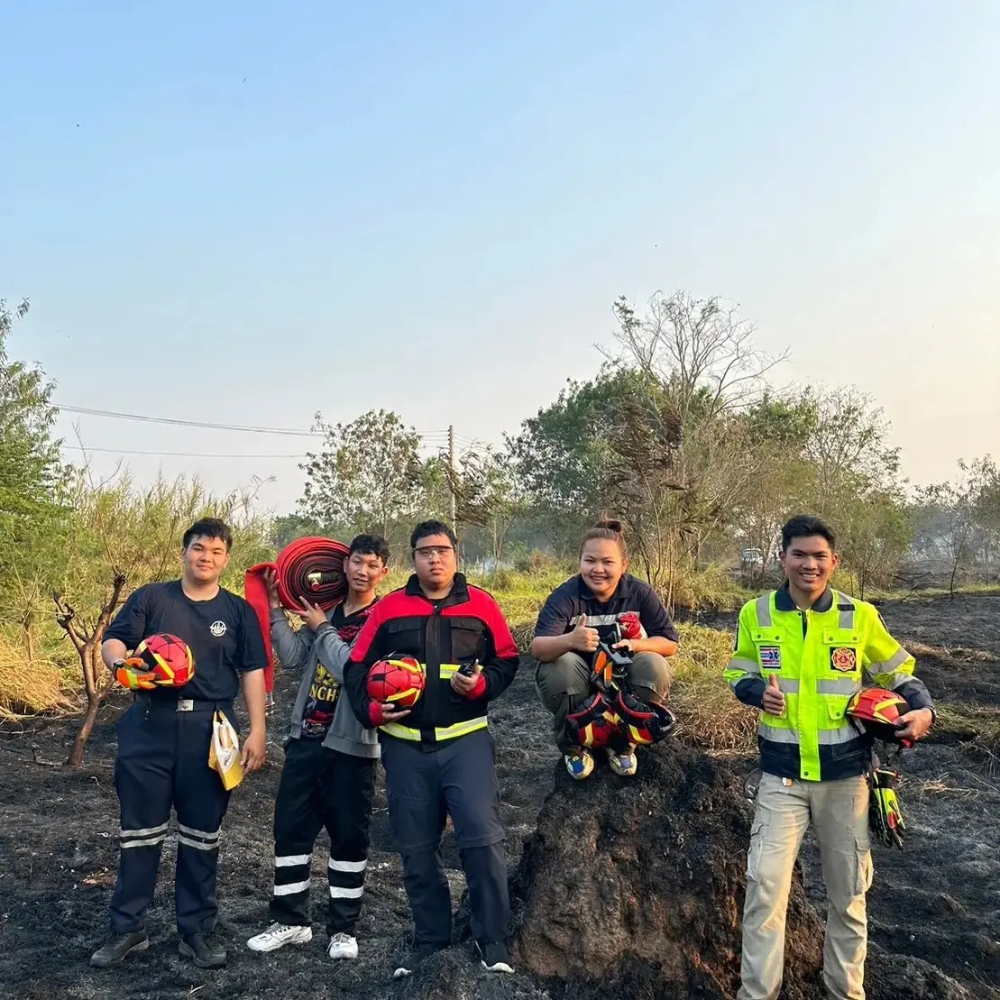
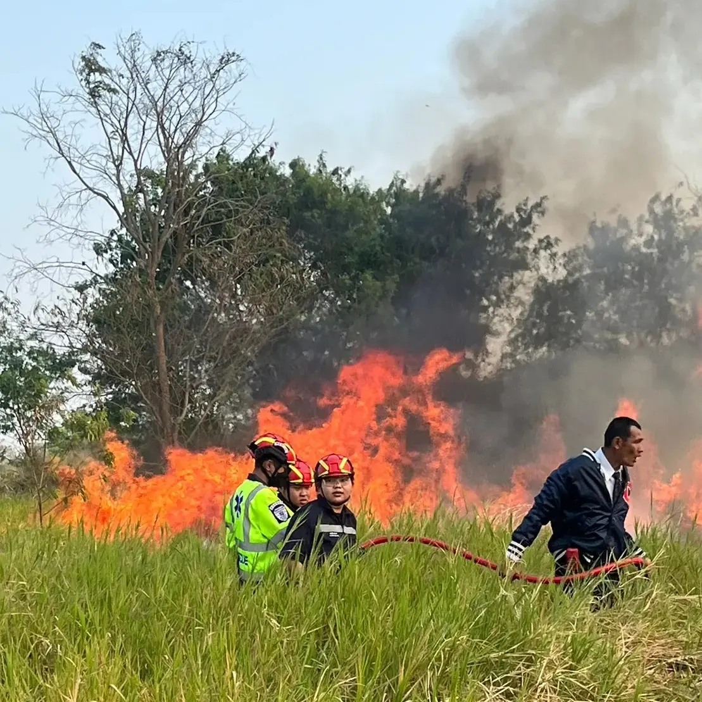
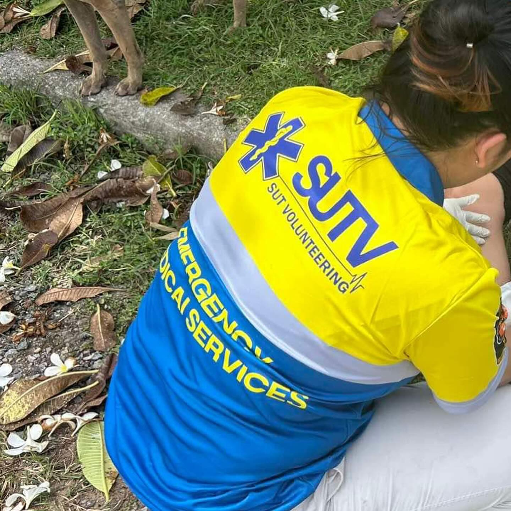

Pimyeesa Hudsapim
Telecommunications Engineering Graduate
Technical Skills
- Python Programming
- Network Troubleshooting
- Wireshark
- Arduino IDE / EdSim51
Software & Tools
- Microsoft Office
- AutoCAD / SolidWorks
- PyCharm
- Canva / Photoshop
Soft Skills
- Problem Solving
- Team Collaboration
- Leadership & Event Planning
- Public Speaking
About Me
I am a Telecommunications Engineering graduate with a growing passion for interdisciplinary work that bridges technology, people, and creativity. I enjoy roles involving communication, project development, and human-centered solutions.
Education
Suranaree University of Technology
Bachelor of Telecommunications Engineering, 2025
GPAX: 2.34
Experience
Intern – Telecom Technician Assistant
NT Angthong (Nov 2024 – Feb 2025)
- Installed and configured internet networks
- Conducted on-site troubleshooting and maintenance
- Created technical documentation
Owner & Barista – Tor-Mai Café
Kalasin (Jan 2025 – Present)
- Prepared beverages and managed operations
- Promoted shop and handled daily finances
Project Designer – Korat International Film Festival (2024)
- Designed activities, organized events, and managed schedules
Volunteer Rescue – SUT Volunteering Club (2021–2024)
- Provided first aid and emergency coordination




Vice President – Student Organization (2023–2024)
- Organized university events and led student teams
Projects
- Intelligent Gas Leak Detection System in Fuel Plants
Designed and implemented a smart sensor system to detect gas leaks using IoT and microcontroller integration. - Vehicle Counting System Based on Artificial Intelligence to Support Research Work
Developed a vehicle detection and counting system using AI (YOLO) to aid traffic research. - Study and Evaluation of Comprehensive CCTV Service by NT in Ang Thong Province
Analyzed and assessed NT's CCTV service including installation, image quality, and network stability during internship.